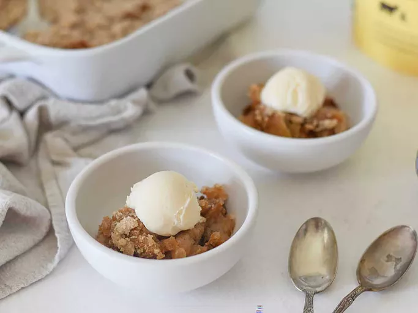

Apple Crumble
Home

Description
The apple crumble recipe is easy to make with Granny Smith apples and a buttery crumb topping with cinnamon and nutmeg for a cozy fall dessert.
Ingredients
- Apples
- Lemon juice
- Sugar
- Flour
- Spices
- Butter
Steps
- Place the apple pieces in a baking dish, then sprinkle with the lemon-water mixture.
- Combine the sugar, flour, spices, and salt in another bowl. Add the butter.
- Pour the flour mixture over the apples and bake until bubbly.